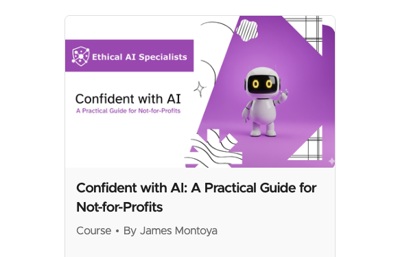

Pick a lesson to begin
Welcome
Four modules that take you from "I've tried ChatGPT once" to using AI deliberately and safely in your day-to-day work. Start with Module 1 and work through in order, or jump to whatever you need.
Most AI training either stays abstract or assumes you can code. This one does neither. It's built for people who run programmes, write grants, manage teams and talk to donors — and who want to use AI well without guessing at the risks.
Four modules, taken at your own pace. Nothing to sign up for, nothing to buy.

I built this for a not-for-profit client. Budget is the number one barrier stopping the sector from adopting AI safely, so charging for the fix seemed backwards.
Not-for-profit staff and volunteers with no technical background. If you've used AI and been unsure whether you were doing it right, this is for you.
Guardrails come first. What not to paste in, how to check an answer, when to stop trusting it — alongside how to get good results.
Pick a lesson to begin
Four modules that take you from "I've tried ChatGPT once" to using AI deliberately and safely in your day-to-day work. Start with Module 1 and work through in order, or jump to whatever you need.
This course is the starting point, not the end of it. If something didn't land, if you're stuck on a real problem at your organisation, or if you've got a manual process you suspect could be automated — tell me about it. I read everything, and the good questions shape what I record next.
Something unclear, or you want the longer version of an answer.
Describe the manual task. I'll tell you honestly whether AI is the right tool, and roughly what it would take.
If several people ask the same thing, it becomes the next module.
AI engineer in Sydney. I build document-validation pipelines, RAG platforms and multi-agent automation for clients across not-for-profit, defence recruitment and financial services, on twenty years of enterprise data engineering. I wrote this course because the sector is adopting AI faster than it's learning to govern it.
See my work